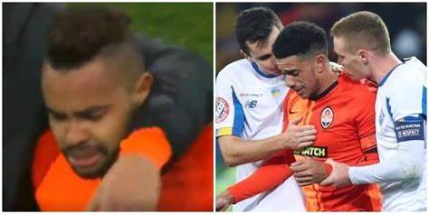
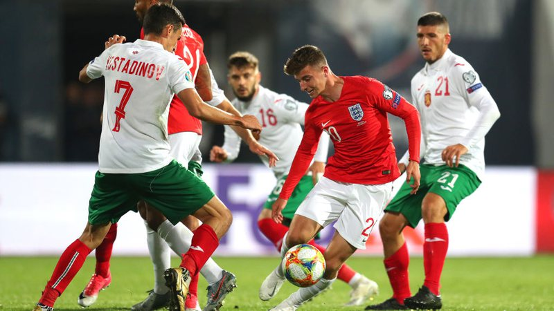
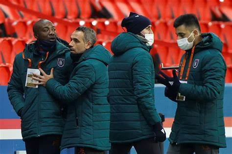

Futebol, veja casos ocorridos no futebol internacional, um desastre
O futebol foi introduzido no Brasil no final do século XIX, por Charles Miller. Esse estudante paulista retornou da Inglaterra em 1894 e trouxe na bagagem diversos artigos, como bolas, uniformes e um livro com as regras estabelecidas. Por conta disso, Charles Miller é atualmente considerado o pai do esporte no Brasil.
Na partida entre Shakhtar Donetsk e Dínamo Kiev, válida pelo Campeonato Ucraniano, os brasileiros Taison e Dentinho foram alvos da torcida local, que imitou sons de macaco contra os atletas. Taison, que reagiu com um gesto ofensivo à torcida e chutando a bola em direção às arquibancadas, foi expulso.
Tanto Dentinho quanto Taison deixaram o gramado chorando. Após pedidos dos jogadores do Dínamo Kiev aos torcedores para que parassem, o jogo foi reiniciado. A Federação Ucraniana puniu o Dínamo Kiev com um jogo de portões fechados e multa de 500 mil Grívnia (R$ 105.102,00). Taison foi suspenso por uma partida.
A partida entre Bulgária e Inglaterra, válida pelas Eliminatórias da Eurocopa de 2020, foi paralisada devido a ofensas racistas e saudações nazistas por parte da torcida búlgara
Foi cumprido, então, o protocolo da UEFA, com uma advertência pelo sistema de som do estádio e, em seguida, a paralisação do jogo. Uma terceira advertência resultaria na suspensão da partida.
A UEFA puniu a Federação Búlgara com dois jogos de portões fechados (um deles apenas em caso de novos incidentes dentro de um período de dois anos) e multa de 65 mil euros.
A partida entre PSG e Istanbul Basaksehir pela UEFA Champions League foi suspensa após ambas as equipes se retirarem de campo, em protesto ao ato racista do quarto árbitro Sebastian Colţescu, que se referiu ao treinador Pierre Webó como “aquele preto ali”. A partida foi retomada apenas no dia seguinte, com uma nova equipe de arbitragem. Em março de 2021, a UEFA suspendeu o árbitro até o final da temporada, além de determinar a sua participação em um programa educacional.
